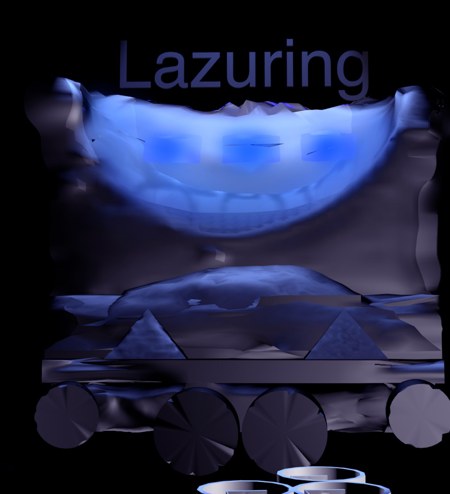
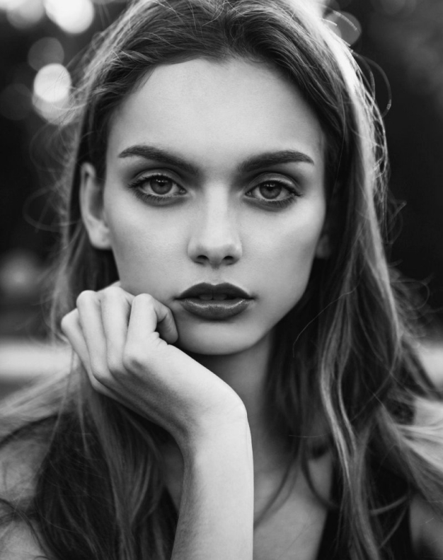
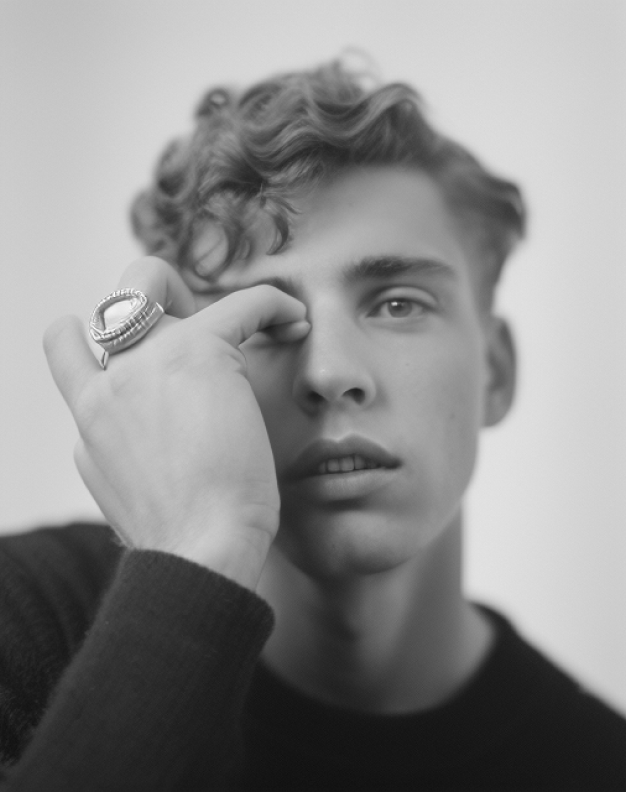
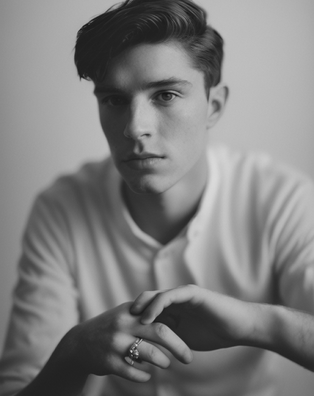
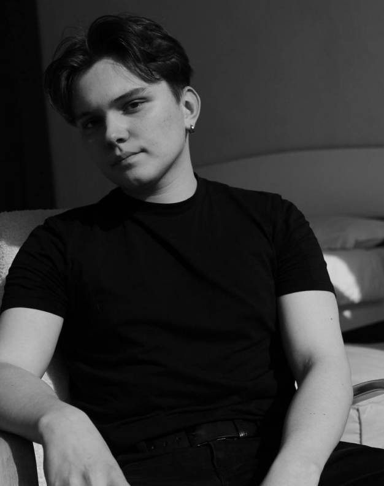

Lazuring - это роскошный ювелирный бренд, который
является одним из лучших производителей украшений
из лазурита. Он был основан в 2010 году и с тех пор
зарекомендовал себя как производитель качественных
и стильных изделий. Украшения Lazuring отличаются
изысканным дизайном, высоким качеством материалов
и безукоризненным исполнением.
Лазурит - это камень, который уже тысячи лет используется
в ювелирном искусстве. Он имеет уникальную голубую
окраску и благородный блеск. Лазурит высоко ценится
за свою красоту и редкость, поэтому украшения из этого
камня всегда были символом роскоши и изысканности.
Lazuring использует только лучший лазурит из разных
уголков мира, чтобы создать украшения высочайшего
качества. Каждый камень отбирается вручную,
чтобы гарантировать его идеальную окраску, чистоту
и прочность. Украшения Lazuring доступны в различных
стилях и формах, от классических колье и сережек
до современных кольцев и браслетов.
Кроме того, Lazuring также предлагает услуги
по индивидуальному заказу. Клиенты могут выбрать свой
камень и дизайн, чтобы создать украшение, которое будет
идеально соответствовать их вкусу и стилю. Опытные
мастера Lazuring работают над каждым заказом вручную,
чтобы гарантировать его безупречное качество.
Наши основатели


Елена
Топ менеджер

Василий
Арт директор

Александр
Коммерческий директор

Александр
Коммерческий директор
Ценности
Lazuring – это люксовый ювелирный бренд, который
специализируется на украшениях из лазурита. Он
представляет собой бренд, который создает не только
красивые украшения, но и придает большое значение
этическим принципам и ценностям.
Одной из главных ценностей Lazuring является качество.
Каждое украшение проходит строгий контроль качества,
чтобы гарантировать, что клиенты получают только лучшее.
Бренд использует только лучший лазурит из разных уголков
мира, чтобы создать украшения высочайшего качества.
Кроме того, опытные мастера работают над каждым
заказом вручную, чтобы гарантировать его безупречное
качество. Lazuring не идет на компромиссы в качестве своих
изделий и поэтому имеет заслуженную репутацию
производителя качественных ювелирных изделий.
Еще одной важной ценностью для Lazuring является этика.
Бренд стремится к экологически чистому производству,
используя только натуральные материалы и сокращая
использование химических веществ. Кроме того, Lazuring
поддерживает фонды, занимающиеся защитой окружающей
среды и социальными инициативами. Бренд
придерживается высоких стандартов этики и отвечает
своим клиентам за каждый этап процесса производства.
Еще одной важной ценностью для Lazuring является
индивидуальность. Бренд предоставляет возможность
клиентам заказывать индивидуальные украшения, которые
будут соответствовать их вкусу и стилю. Каждый камень
отбирается вручную, и мастера работают над каждым
заказом вручную, чтобы гарантировать его безупречное
качество. Lazuring создает украшения, которые являются
подлинным отражением индивидуальности своих клиентов.